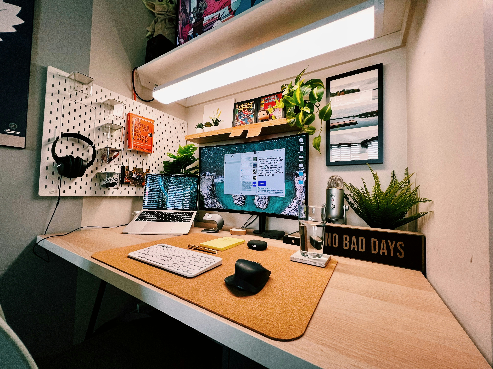

Boost Your Productivity
FocusFlow helps teams and individuals manage their time, tasks, and goals with smart planning and intuitive tools.

What Makes FocusFlow Powerful


“FocusFlow changed the way we work. It's like having a personal assistant keeping our team aligned and on track every day.”
Ready to reclaim your time?
Start using FocusFlow today and bring clarity and control to your workflow.